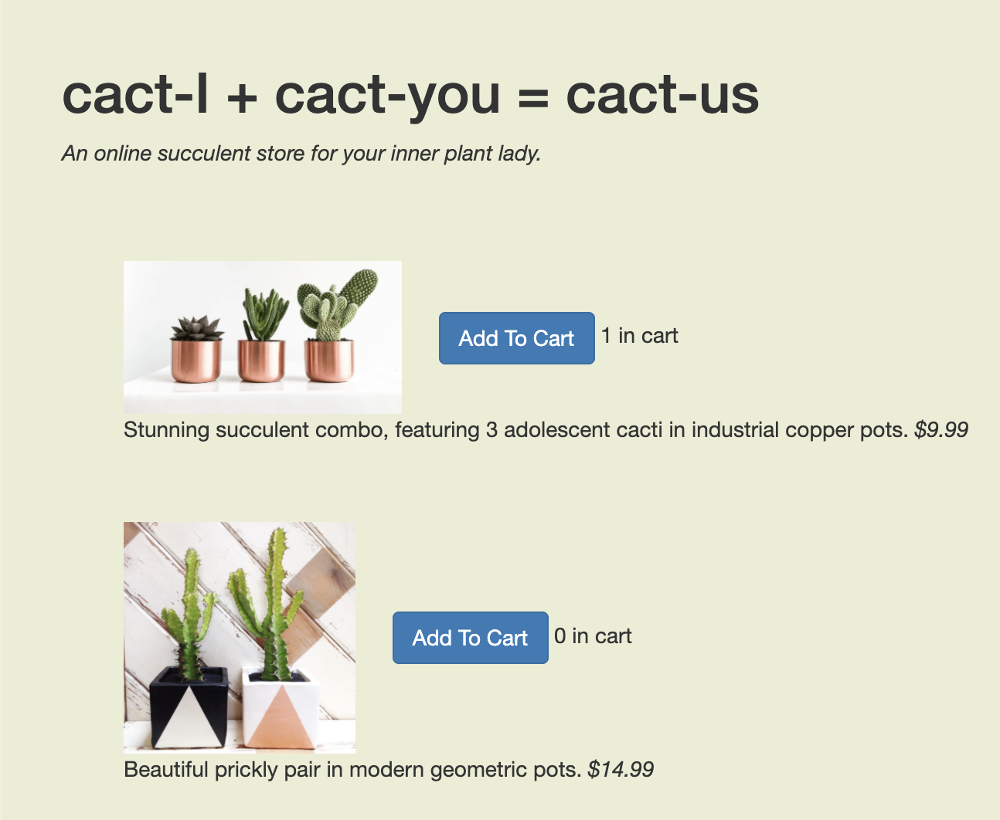
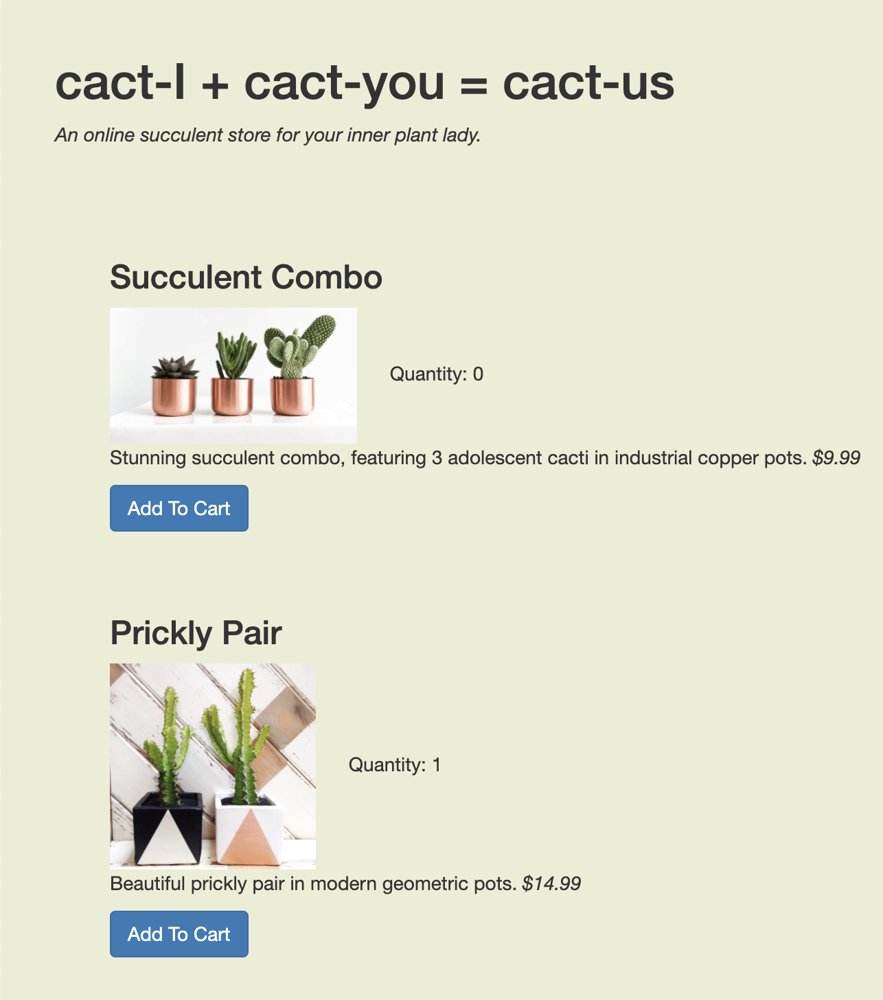
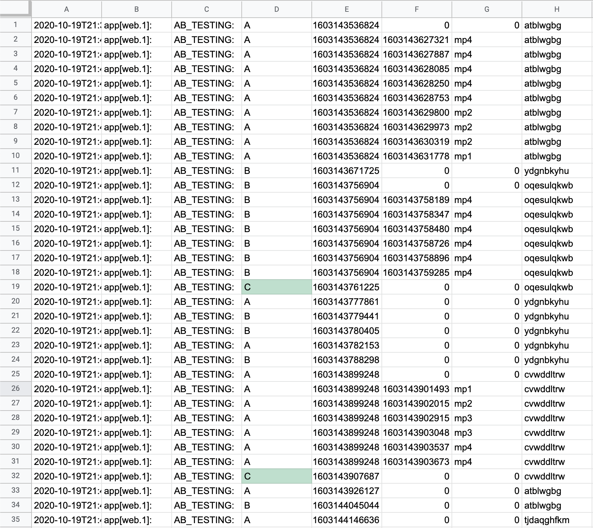
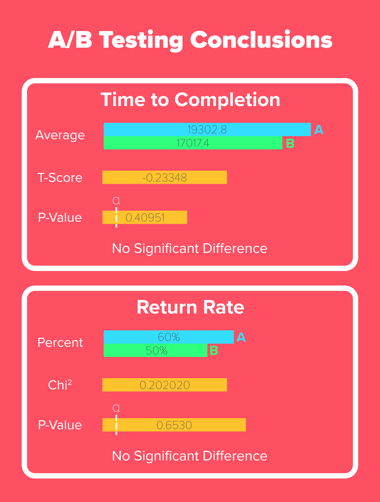

Introduction
In this project I've set out to learn how A/B testing can tell us the effects our interface changes have on the performance of our applications. To do this, I used the simple example of a website selling cacti. Users were to add at least $150 worth of cacti to the cart and checkout. I decided to measure both time to completion of the task, and the rate at which users returned to the home page from the cart. I created two versions of the website to see their effect on these metrics, these two versions are shown below. Upon visiting the site, users would be randomly taken to site A or B. Click the link below to get one of these sites at random!
The Two Interfaces
Site A
This version has the "Add To Cart" buttons to the right of the image along with "# in cart" wording to display the quantity. The different cacti are also lacking titles.
Site B
In this version the "Add To Cart" button is placed below the cacti, with "Quantity: " used as the language to show quantity. There are also new titles above each type of cacti, specifying the type.
Hypotheses
Before setting out to collect and analyze data, I wrote null hypothesis for each of my metrics. Our data will let us know if we have disproven the null hypothesis and should therefore accept the alternative hypothesis.
Time to Completion
Null Hypothesis: Interface B has no faster time to completion than interface A.
Alternative Hypothesis: Interface B has a faster time to completion than interface A.
Reasoning
I think the added titles in site B, as well as the more easily stacked buttons, will make it easier to quickly navigate site B, giving it a slight edge for time to completion.
Return Rate
Null Hypothesis: Interface B has no lower return rate than interface A.
Alternative Hypothesis: Interface B has a lower return rate than interface A.
Reasoning
I think the wording of "Quantity: " in interface B is less confusing and will help users be more successful when adding items to their cart, and therefore will need to return from the cart less.
Collecting Data
Data was collected from 20 different users of the website. This data was stored in timed logs that allowed me to see when users loaded each site, added items to the cart, viewed the cart, and returned to the page. Using these logs I was then able to aggregate the data, analyze it, and come up with my conclusions. An example of these logs is below.
Results Infographic
Using the data from above I calculated the T-Score and P-Value of the time to completion and the Chi^2 and P-Value for the return rate of both versions (A & B) of the site. I summarized these results and findings in the infographic below. For there to be a significant difference we were looking for a P-Value less than 0.05. Therefore, for both time to completion and return rate, I did not find a significant difference between sites A and B and therefore kept my null hypotheses.
Broad Takeaways
In the end, I've concluded the following from doing this project:
- I definitely needed more users and was limited by having only 20. Had I had more users I think I may have been able to conclude that there was a difference between the two interfaces.
- I also feel we were limited in this assignment as our users were simply other user interface students, meaning our results are fairly biased.
- Although I wasn't able to come to an actual conclusion, Site B did average a shorter time to completion which I do believe shows that that layout with titles and buttons creating more of a clear grouping or card affordance was more intuitive to quickly use.